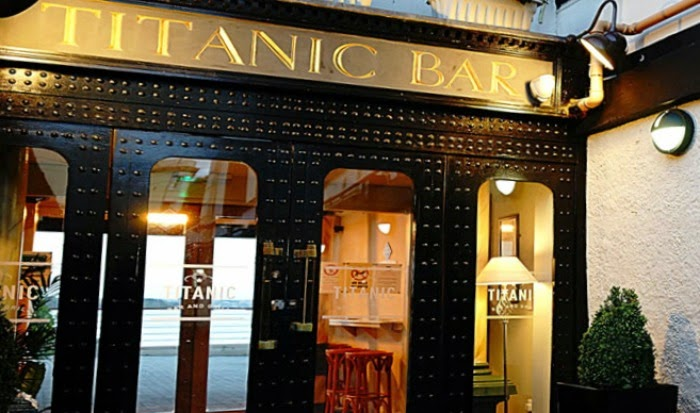
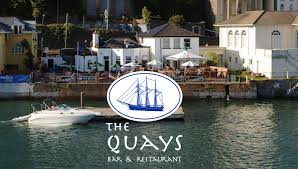
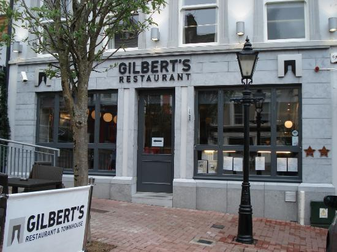
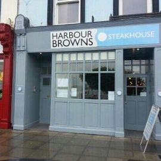
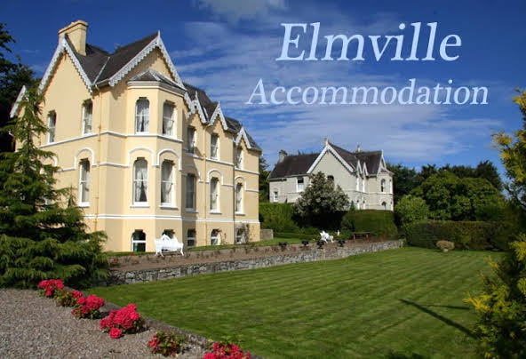
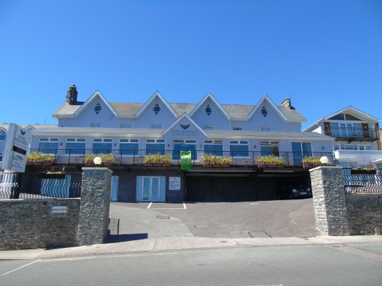

Dont forget: 17 March - St.Patrick's Day

Titanic
Bar & Grill
Quality suppliers and a contemporary, stylish atmosphere combine to provide an ideal
setting for you enjoyment. Extensive drinks offering including top end gins and whiskeys, a unique craft
beer collection, refreshing cocktails and much more.
• 20 Casement Square, Kilgarvan, Cobh, Co. Cork
•
Phone:(021) 481 4585
• Email: titaniccobh@gmail.com
The Quays Restaurant
The
spectacular views of Cork Harbour and relaxing atmosphere make The Quays an experience not to be missed.
Enjoying prime location along the waterfront in the heart of Cobh with strong focus on fresh seafood and
inviting ambience the Quays is a must for locals and visitors alike.
•
Westbourne Pl, Kilgarvan, Cobh, Co. Cork
• Phone:(021) 481 3539
• Email: admin@thequays.ie
Gilbert's Bistro
Gilbert’s Bistro is situated in one of the two historical squares of the beautiful heritage town of
Cobh. Now under new management the Bistro is delighted to re-open this Sunday April 12th, 2015.
• 11
Pearse Square, Kilgarvan, Cobh, Co. Cork
• Phone:(021) 481 1300
• Email: gilbertsincobh@gmail.com
Harbour
Browns Steakhouse
Whether you're a visitor to Cobh looking for light lunch on your travels, or
a local seeking a quick bite in their working day, we have a varied lunch menu to suit all tastes.
•
11 West Beach, Kilgarvan, Cobh, Co. Cork
• Phone:(021) 481 1604
• Email: bookings@harbourbrownssteakhouse.ie
Leonardo's
Cafe Kimbo
We serve paninis, salads, sandwiches and breakfast all day. We also serve a variety
of pasta dishes and traditional homemade lasagna.Takeaway available
•
5 West Beach, Kilgarvan, Cobh, Co. Cork
• Phone:086 355 2440
• Email: Contact:Leonardo's
Cafe Kimbo
Jacob's
Ladder
Dining at the WatersEdge Hotel and Jacob’s Ladder restaurant is a truly memorable experience. Our team
set out to provide you with the freshest local produce with a modern bistro style touch. The restaurant
sits facing the majesty that is Cork Harbour and its continental, fresh design is a wonderful setting for
the delicious food that is presented every day.
• Westbourne Pl, Kilgarvan, Cobh, Co. Cork
•
Phone:(021) 481 5566
• Email: info@watersedgehotel.ie
Dont forget: 17 March - St.Patrick's Day